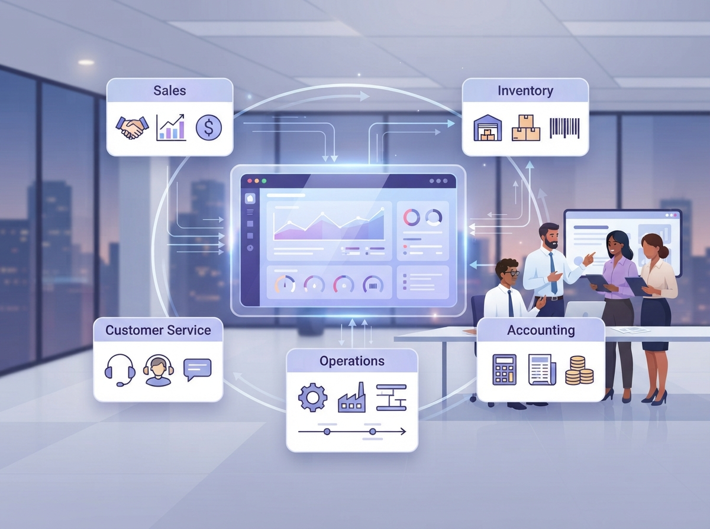
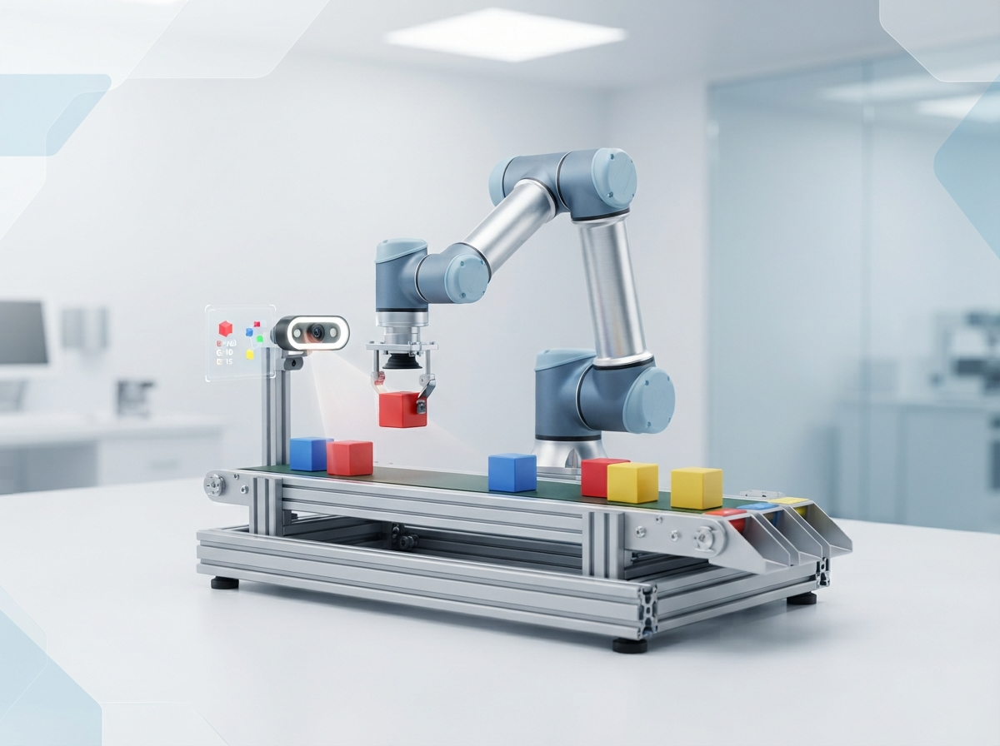
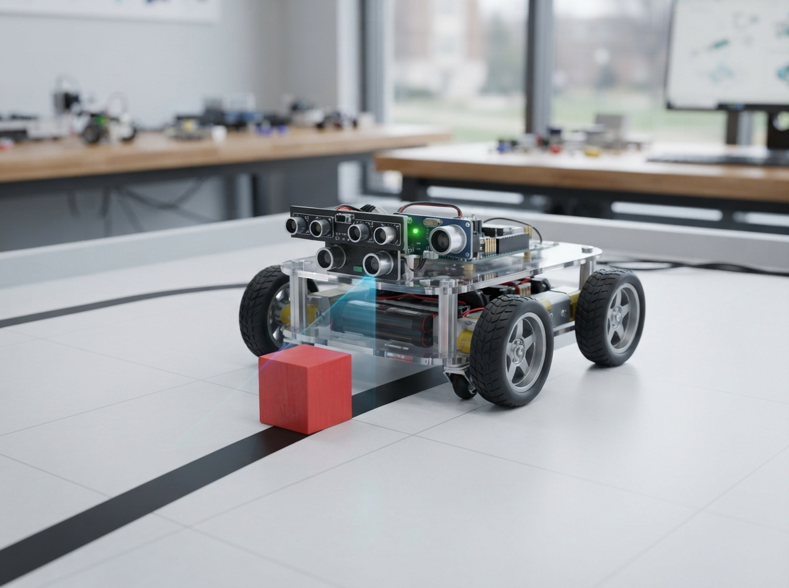

Automation & Control
- PLC Programming
- Sensors
- IoT Fundamentals
Hello, I’m Harjodh Singh
Mechatronics engineer focused on automation and control. Skilled in PLC programming, fault diagnosis and system troubleshooting across automotive, industrial and software-based systems.
About
I’m a Mechatronics Engineering graduate based in Muscat, Oman, working where engineering meets business technology.
Mechatronics engineer seeking an opportunity in automation and control roles. Skilled in PLC programming, with a background in fault diagnosis, system troubleshooting and technical documentation across automotive, industrial and software-based systems. Experience in system configuration, client onboarding and post-deployment support for 40+ companies, plus hands-on work with sensors, robotics and CNC machining.
I enjoy turning messy, real-world problems into systems that work, whether that’s a configuration, a script or a conversation with a client.
Skills
Experience
May 2025 – May 2026
Adz Network Media · Muscat, Oman
Jan 2025
IFM · Muscat, Oman
Nov 2024 – Mar 2025
Shining Day LLC · Muscat, Oman
Jan 2024 – May 2024
Chitkara University · Punjab, India
Projects
1–3 of 6
Onboarded, configured and supported 40+ companies on the WhatsApp Business API, reviewed chatbot workflows and wrote the user guides.

Configured Odoo ERP with core modules including Accounting, deployed a cloud-hosted instance using Zrok for secure remote multi-user access, and trained staff.

An access-control lock that opens only after successful biometric verification. A microcontroller reads the sensor and drives the locking mechanism.

A robotic arm that detects an object’s color with a sensor and sorts it into the right position, combining sensing, actuator control and programming.
A mobile robot that follows a marked path and avoids obstacles in real time using sensor feedback.
A responsive portfolio built from scratch in HTML, CSS and JavaScript, with light and dark themes and a projects carousel, version-controlled on GitHub.
Education
Aug 2020 – Jun 2024
Chitkara University · Punjab, India
Apr 2018 – Mar 2019
Indian School Muscat · Muscat, Oman
Contact
Have a project, a role or just an idea? My inbox is open.